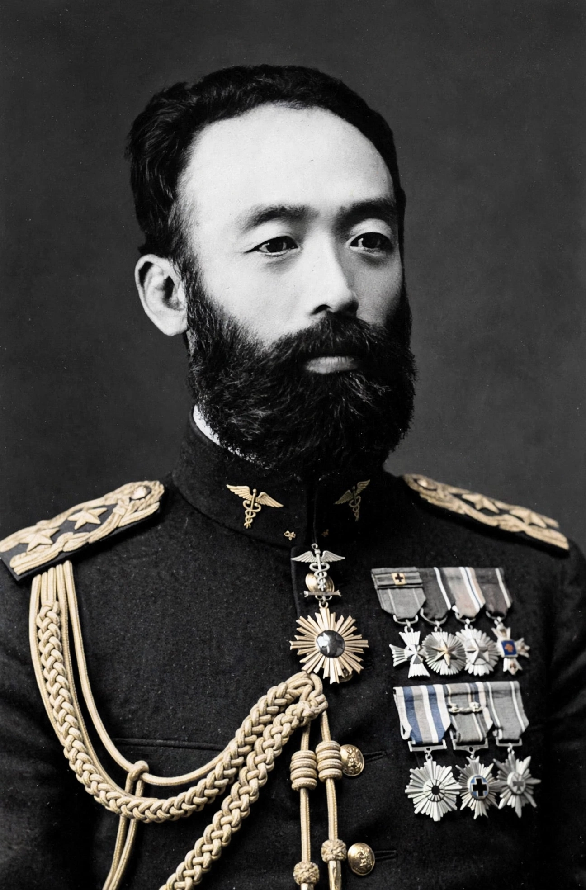

Mori Ōgai (Japanese: 森 鷗外; 17 February 1862 – 9 July 1922), born Mori Rintarō, was a Japanese army surgeon general, translator, novelist, and poet who, with Natsume Sōseki, stands at the head of modern Japanese literature. Trained in Germany, he introduced Western aesthetics and drama to Japan, debated the intellectual issues of the Meiji era, and in later life wrote meticulously researched historical fiction and biographies. His early story "The Dancing Girl" (1890) is a landmark of the modern Japanese short story.
| Mori Ōgai | |
|---|---|
 Ōgai in uniform | |
| Born | 17 February 1862, Tsuwano, Japan |
| Died | 9 July 1922 (aged 60), Tokyo, Japan |
| Occupation | Army surgeon, novelist, translator, critic |
| Notable works | "The Dancing Girl"; Vita Sexualis; The Wild Geese; Sanshō Dayū |
| Military service | Imperial Japanese Army; Surgeon General |
Mori was born in Tsuwano in present-day Shimane, the son of a physician to the local lord. A prodigy trained in Dutch and German learning, he entered the military medical school and graduated in 1881, becoming the army's youngest medical graduate. From 1884 to 1888 the army sent him to Germany — Leipzig, Dresden, Munich, and Berlin — where he studied hygiene with figures such as Max von Pettenkofer and Robert Koch and absorbed German literature and philosophy. A rumored love affair with a German woman, later fictionalized in his fiction, trailed him home; he married under family pressure shortly after his return.
As a medical officer Ōgai campaigned, unsuccessfully at first, for nutritional reform of army rations in the face of beriberi — the army's refusal of his barley-rice proposals during the Russo-Japanese War, and the terrible toll of the disease, became a famous controversy, though his own record in it has been reassessed. He rose to Surgeon General of the army in 1907 and, after retiring, directed the Imperial Museum and the Imperial Academy of Fine Arts.
Ōgai's literary debut, the story "The Dancing Girl" (Maihime, 1890), tells of a Japanese official in Berlin torn between love for a German dancer and his career — an archetypal drama of modern Japanese identity. In journals he edited and in criticism he introduced European aesthetics, fought the naturalists over the purpose of literature, and translated Goethe, Ibsen, Strindberg, and Hans Christian Andersen. His novel The Wild Geese (1911–13) portrays a moneylender's mistress whose longing is glimpsed through layered narration.
After the seppuku of General Nogi Maresuke in 1912, following the Emperor Meiji in death, Ōgai turned to historical fiction — works such as "The Last Testament of Okitsu Yagoemon", Sanshō Dayū (later a celebrated film by Kenji Mizoguchi), and The Abe Clan — exploring loyalty, resignation, and the feudal ethic with cool precision. His final years produced monumental biographies of Edo-period physicians and scholars.
Ōgai embodies the Meiji duality of official and artist, West and Japan, duty and feeling. His erudite, classical-tinged prose and his intellectual rigor made him the great counterweight to Sōseki, and his house in Tokyo is preserved as a memorial museum.
From Wikipedia, the free encyclopedia (recreated from memory).